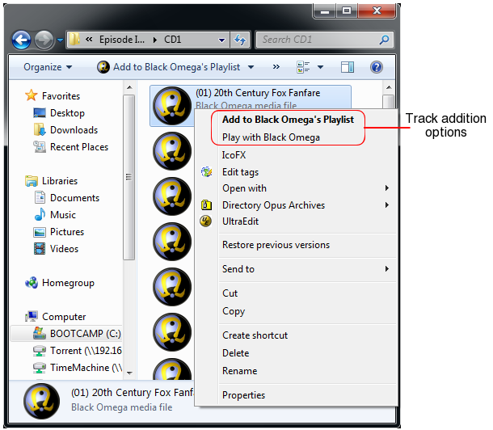

The File Associations Settings interface allows you to associate the various music and playlists file formats with Black Omega such that it is integrated with Windows Explorer.
Ticking the checkbox next to the given file extension will associate that file format with Black Omega.
Creating a file association allows integration of Black Omega into Windows Explorer such that when you right-click on an associated file you can
You can select the default action to take when you left double-click on a file to either play the file immediately or append it to the current playlist.
By ticking the “Associate Black Omega with Directories” adds the ability to append the music contents of a directory into Black Omega’s playlist from the context menu for the directory from Windows Explorer.
